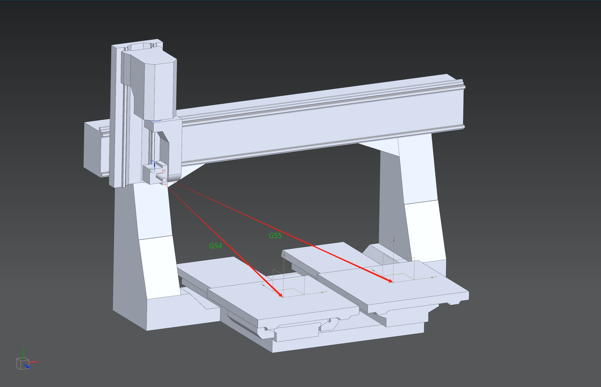

新建运动链-第一步：输出机床模型
一、定义世界坐标系的位置
说明：
1. 严格来说，世界坐标系具有唯一性且不可修改。这里的“世界坐标系”指的是 Alpha Optimal 软件内的世界坐标系与 CAD 软件中的工件坐标系的对应关系。请将 CAD 软件内的工件坐标系视为 Alpha Optimal 里的世界坐标系位置，这样可以明确输出模型的位置。
2. 第一步和第二步为组合操作。请先将 X、Y、Z、B 四个轴移动到 0 位置，再设置世界坐标系，否则设置的位置会有误。
1. 机床的 X、Z、A 轴必须处于 0 位置
2. 定义世界坐标系的位置
-
以 C 轴的旋转中心点沿 Z 的负方向绘制一条线段 LC

-
以 A 轴的旋转中心点沿 X 的负方向绘制一条线段 LA

-
LC 和 LA 的交汇点就是 世界坐标系 的 0 点位置
- 设定坐标系到交汇点，后续的模型输出都是以此坐标系为基准进行输出

二、调整模型位置
- 目标：把每一个轴 X、Y&U、Z、C、A 都移动到机械坐标 0.0 的位置。
1. 模型初始姿态

2. 模型调整方法
-
X 轴调整：
- 先移动 X 轴到中间位置（注意同时需要移动 Z、C、A 轴）
- 再根据 X 轴的行程，移动行程的一半，往 X 轴机械坐标
0的方向移动 

-
Z 轴调整：
- 调整 Z 的最高位置距离顶面在 30-50mm 之间。有实际物理机床的，以测量物理机床为准

-
C、A 角度调整为
0状态： -
Y&U 轴调整：
- 移动 Y&U 到机械坐标
0的位置 - 定义工件坐标系在 Y&U 的位置

- 以工件坐标系为起点，世界坐标系为目标点，复制 Y（如有 Tgv 也一同复制）到世界坐标系零位

- 移动 Y&U 到机械坐标

三、记录理论值
在配置运动链阶段，先将理论值写入配置文件，用以验证配置的正确性。请记录以下数据，方便初始使用。
-
工件坐标系：
- 
- G54: 左台面 x y z Point( 1185.2, -731.0, -1310.86 )
- G55: 右台面 x y z Point( 2486.67, -731.0, -1310.86 )
-
RTCP 值：
- 注意：测量刀具安装点时，主轴必须垂直朝下

- 格式：x y z 角度补偿（4 个值，空格分隔）
- x y z 位移：从安装点到世界坐标系（CAD 测量时为世界坐标系到安装点，需取反）
- 角度补偿：A 轴为 0° 时，主轴中心轴线与 Z 轴夹角（需取反）
- 示例：
- T1: x y z 角度补偿
- …
- TN: x y z 角度补偿
四、模型输出

- 在软件的安装路径
machineSample文件夹内新建文件夹：master_sample 
- 合并模型：
- 合并原则：一个轴或节点对应一个模型
- 相同的模型只输出一个
- 输出格式：STL